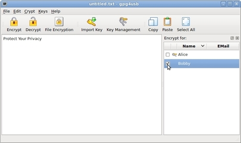

Cómo cifrar un texto
Hay tres pasos para cifrar un texto. Vamos a suponer que Alice quiere cifrar un texto para Bobby.
PASO 1: Escribir el texto
Primero, Alice escribe su texto (se recomienda no usar tildes).

PASO 2: Escoger la llave(s)
Segundo, ella escoje la llave de Bobby. NOTA: Usted también puede escoger múltiples llaves, de manera que el texto se cifrará para más de una persona. Así, por ejemplo, usted podría seleccionar siempre su propia llave, de este modo puede cifrar/descifrar sus propios textos más tarde.

PASO 3: Cifrar el mensaje
Finalmente, Alice pulsa el botón 'Cifrar' para cifrar el texto. Alternativamente, ella podría haber usado el atajo 'Ctrl+E' o usar el menú 'Cifrar -> Cifrar'.